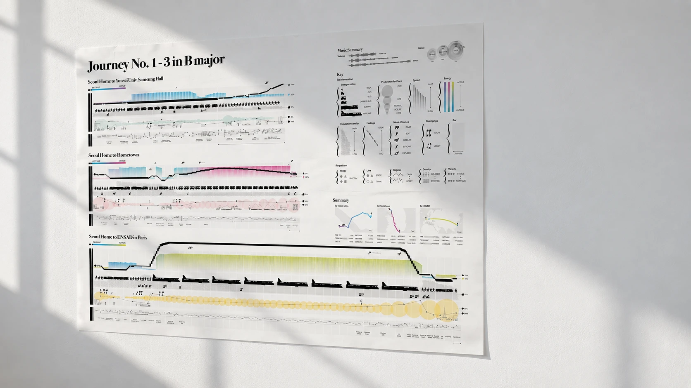
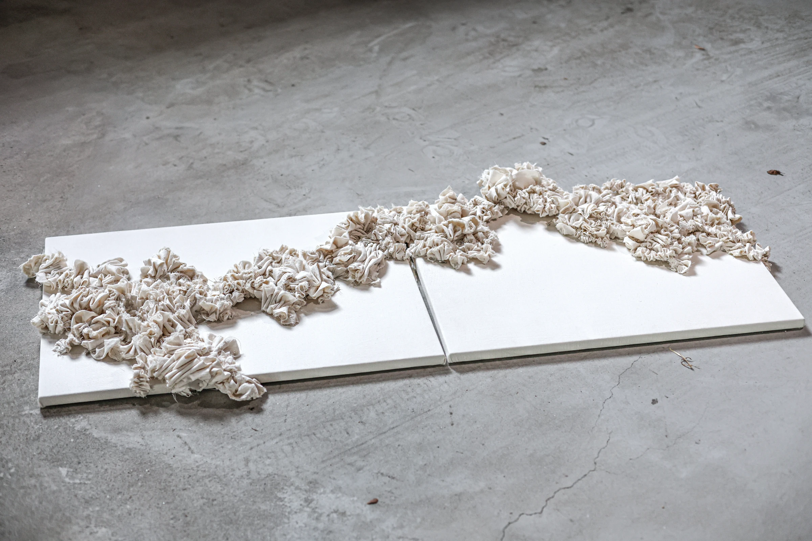
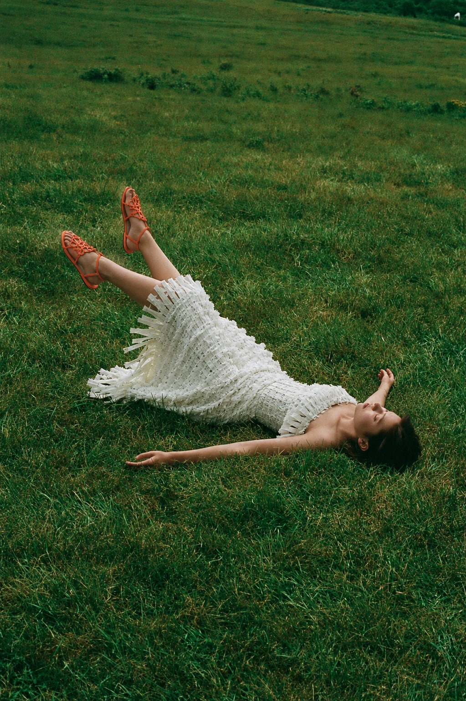
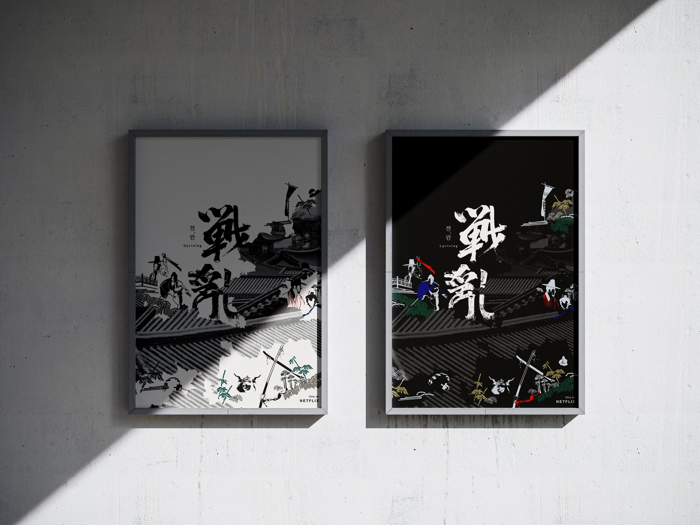

- 2021Still Life
- 2020비추지 않으면 보이지 않는 것들
- 2019다 다르다
- 2018누가 누구를
- 2017이별의 재구성
- 2016Design Teller
- 2014KR-CODE
- 2013자가발전
- 2012희망하는 인간
- 2011Human, Nature, Technology
- 2010공명
- 2009공존
 about System
about System
about System
about System
Design for X는 학생들이 스스로 다양한 이슈와 주제를 발견하고,
통합적이고 다학제적인 접근을 통해 새로운 디자인 가능성을 그려보는 프로젝트입니다.
사회·문화·기술의 변화 속에서 디자인의 역할과 영역을 확장하며,
각자의 관점에서 미래를 위한 디자인을 제안합니다.
Design for X is a project in which students identify diverse issues and themes,
envisioning new design possibilities through an integrated, interdisciplinary approach.
Amid shifts in society, culture, and technology, students expand the role and scope of design,
proposing designs for the future from their own perspectives.




about System